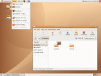
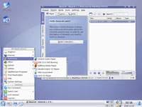

What does that mean?
Linux is an operating system, like Microsoft
Windows and Mac OS X.
The difference between Linux and those two operating systems is huge -
Linux is totally free. You can download it, install it, use it forever
with no charge. You can even update it at no cost.
How is it free? Without getting into too many details, Linux is open
source software - like all of the software on OpenDisc.
Tens of thousands of people
across the globe contribute time and effort into making Linux the best
operating system on the market.
Because it's open source software, a lot of groups (and companies)
release their own particular version of Linux - all fundamentally the
same, just with different included programs and appearances. These are
called Linux
Distributions.
The most popular of these Linux Distributions (according to
DistroWatch) is Ubuntu.
From Ubuntu's website:
"Ubuntu
is a community developed,
linux-based operating system that is perfect for laptops, desktops and
servers. It contains all the applications you need - a web browser,
presentation, document and spreadsheet software, instant messaging and
much more."
Ubuntu itself comes in four varieties, Ubuntu, Kubuntu, Edubuntu
and
Xubuntu; we'll stick to the
first two for this introduction.
What is the difference between Ubuntu and Kubuntu? They're both
essentially identical, but Kubuntu runs a different "window manager",
named KDE and Ubuntu uses one called GNOME. To notice
the
difference, have a look at the two screenshots below:
|  |  |
| Ubuntu | Kubuntu |
;){kind=link}
;){kind=link}
Kubuntu is popular with people switching to Linux, as it looks and acts
like
modern versions of Microsoft Windows, yet Ubuntu is more popular
overall.
Whichever one you choose you'll get the same Linux underneath, and if
you change your mind you can always install the other window manager
later on.
If you want to see how it looks on your computer but are hesitant to
take the plunge, download a "Live CD"
version of either Ubuntu
or Kubuntu. Once you burn it to a disc, pop it in your disc drive and
reboot. Linux will boot onto your computer so you can explore it at
your own leisure. Once you're finished simply remove the disc and
reboot again, and your computer will return to how it was previously
with
no harm done and no trace of Linux.
Once you've decided to install Ubuntu or Kubuntu you can even choose to
install it along-side your current Microsoft
Windows
operating system,
something which is called "dual-boot".
With this you can reboot back into Windows
if you need to - once you install Linux though you'll wonder why you
ever bothered with anything else!
For
more information; Ubuntu,
Kubuntu, Linux.